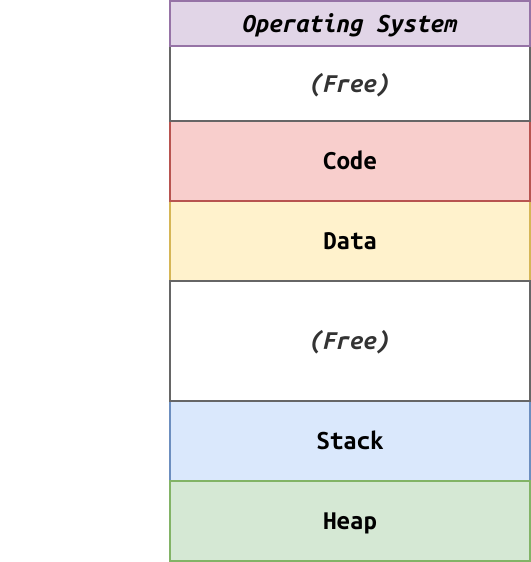
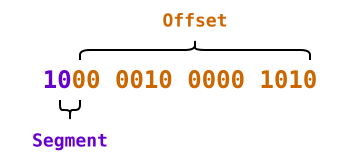
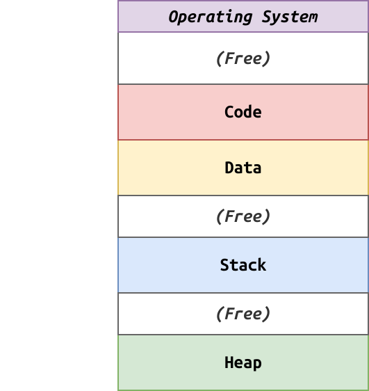
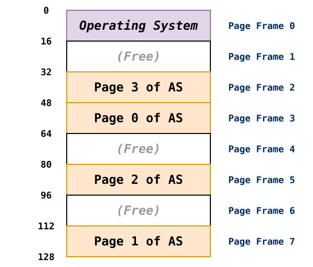
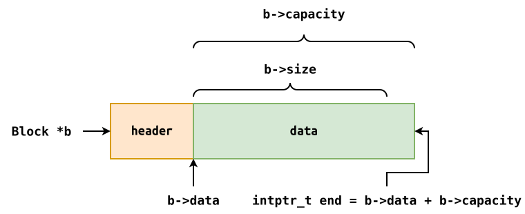

Segmentation: Overview¶
Segmentation is a generalized form of base and bounds:
-
Each component in the address space is considered a separate segment.
-
Each segment has its own base and bounds registers.

Segmentation: Segments¶
Because our address space is split into separate segments, we have some additional issues and opportunities:
-
Code Sharing: We can now share common code segments (ie. multiple instances of programs)
-
Growth Direction: While most segments such as heap grow in positive direction, the stack grows downwards.
-
Ubuntu has switched to Rust coreutils... by default Rust applications are statically linked... is this an issue when it comes to code sharing? more memory usage because libraries can't be shared
-
Ubuntu actually uses dynamic linking and ... compiles all the programs into a single binary with hardlinks for each utility... is this also an issue? no because the binary can be loaded once and shared for each utility.
In addition to the base and bounds, we will need accounting information!
Segmentation: Hardware Information¶
To support segmentation, the MMU now needs to know the following information:
| Segment | Base | Size | Growth Positive? | Protection |
|---|---|---|---|---|
| Code | 32K | 2K | 1 | Read-Execute |
| Data | 34K | 2K | 1 | Read-Write |
| Heap | 36K | 2K | 1 | Read-Write |
| Stack | 28K | 2K | 0 | Read-Write |
Operating system must track this information for every process and save and restore it on each context switch.
Segmentation: Address Translation¶
Given the following 16-bit virtual address:

- Why
2-bitsfor segments?4
-
What is the largest possible segment size?
2^14 = 2^4 * 2^10 = 16 KDorm Analogy: Rooms have
3digits... first digit isfloor, remaining2digits identify which room on that floor. Because we have2digits, then the maximum number of rooms is...10^2 = 100.What is the maximum possible offset value?
2^14 - 1 = 11 1111 1111 1111 = 3 F F F = 16383Which segment is this virtual address located in?
heap
What is the physical address of this virtual address?
PA = 36K + Offset = 36K + 522 = 37386Segmentation: Reading 08¶
/* Constants */ #define KB (1<<10) #define SEGMENT_MASK (0xC000) #define SEGMENT_SHIFT (14) #define OFFSET_MASK (~SEGMENT_MASK) /* Structures */ typedef struct { uint16_t base; uint16_t size; } SegmentRecord; /* Constants */ SegmentRecord MMU[] = { {.base = 32*KB, .size = 2*KB}, /* 00: Code */ {.base = 34*KB, .size = 2*KB}, /* 01: Data */ {.base = 36*KB, .size = 2*KB}, /* 10: Heap */ {.base = 28*KB, .size = 2*KB}, /* 11: Stack */ }; int main(int argc, char *argv[]) { uint16_t virtual_address; while (fread(&virtual_address, sizeof(uint16_t), 1, stdin)) { uint16_t segment = (virtual_address & SEGMENT_MASK) >> SEGMENT_SHIFT; uint16_t offset = (virtual_address & OFFSET_MASK); char *fault = ""; if (offset >= MMU[segment].size) { fault = " Segmentation Fault"; } uint16_t physical_address = MMU[segment].base + offset; printf("VA[%04hx] -> PA[%04hx]%s\n", virtual_address, physical_address, fault); } return EXIT_SUCCESS; }Segmentation: Problems¶
Unfortunately, segmentation suffers from a major problem:
External fragmentation: the variable sized segments leads to many tiny holes.
-
We can compact segments, but that is expensive.
-
We can rely on free-list management algorithms, but they can only minimize fragmentation.
Analogy: Packing a suitcase (regular sized things)

Paging: Overview¶
Rather than chop memory up into variable sized pieces, paging uses fixed-sized units called pages:
-
Each process has an address space that consists of fixed-size virtual pages.
-
Each virtual page maps to a physical page frame (of the same size).
Typical page size is
4K(BUFSIZis8K).Need a data structure to store mapping from virtual to physical.

Paging: Page Table¶
Each process has a page table that stores the mapping of each virtual page number to the corresponding physical page frame.
Bit Information Valid Is the mapping valid? Protection Can we read, write, or execute data in page? Present Is the page in physical memory? Reference Has the page been accessed? In addition to the mapping, each page table entry (PTE) may contain the bits of information above.
Paging: Address Translation¶
Given the virtual address,
36, answer the following questions:-
Which page is this address located?
Since we have
4pages, we now need2 bitsto represent the virtual page number (VPN). Therefore, in this case, the VPN is10, which is Page2.Which page frame is this address located?
According to our diagram, the virtual page
2corresponds to physical page frame5.What is the offset of this address?
The remaining
4 bitsrepresent the offset, which is0100or4.What is the physical address?
The physical address is the base of page frame
5(80) + offset (4) = 84.Paging: Reading 09¶
/* Reading 09 */ #include <stdint.h> #include <stdio.h> #include <stdlib.h> /* Constants */ #define ADDRESS_LENGTH (8) #define PAGE_SIZE (1<<4) #define MAX_PAGES ((1<<ADDRESS_LENGTH) / PAGE_SIZE) #define VPN_MASK (0xf0) #define VPN_SHIFT (4) #define OFFSET_MASK (~VPN_MASK) /* Structures */ /** * Each Page Table Entry is a byte with the followin bit fields: * * NNNNNNVP * * NNNNNN: Physical Frame Number * V: Valid bit (page is valid/in-use) * P: Protection bit (page is protected/accessible) **/ typedef struct { uint8_t PFN : 6; uint8_t Valid : 1; uint8_t Protected : 1; } PageTableEntry; /* Constants */ PageTableEntry PageTable[MAX_PAGES] = { {.PFN = 3, .Valid = 1, .Protected = 0}, /* Page 0 */ {.PFN = 7, .Valid = 1, .Protected = 0}, /* Page 1 */ {.PFN = 5, .Valid = 1, .Protected = 0}, /* Page 2 */ {.PFN = 2, .Valid = 1, .Protected = 1}, /* Page 3 */ }; int main(int argc, char *argv[]) { uint8_t virtual_address; while (fread(&virtual_address, sizeof(uint8_t), 1, stdin)) { uint8_t vpn = (virtual_address & VPN_MASK) >> VPN_SHIFT; uint8_t offset = (virtual_address & OFFSET_MASK); char *fault = ""; if (!PageTable[vpn].Valid) { fault = " Segmentation Fault"; } else if (PageTable[vpn].Protected) { fault = " Protection Fault"; } uint8_t physical_address = (PageTable[vpn].PFN << VPN_SHIFT) | offset; printf("VA[%02x] -> PA[%02x]%s\n", virtual_address, physical_address, fault); } return EXIT_SUCCESS; }Paging: Memory Usage¶
Suppose we had a
32-bitmachine with4KBpages:-
How many pages can a process have?
Number of Pages = Number of Virtual Addresses / Size of Each Page = 2^32 / 2^12 = 2^20 ~ A millionHow many bits do we need for the VPN?
20 bitsHow many bits do we need for the offset?
12 bitsHow large is the page table (assuming each PTE is
4bytes)?Page Table Size = Number of Pages * Size of each Page Table Entry = 2^20 * 4 = 4MBPage Table size is a concern because it is per process.
Page Table is stored in physical memory.
Paging: Memory Access¶
# Extract VPN from Virtual Address VPN = (VirtualAddress & VPN_MASK) >> VPN_SHIFT # Form the address of the page-table entry (PTE) PTEAddress = PTBR + (VPN * sizeof(PTE)) # Fetch the PTE PTE = AccessMemory(PTEAddress) # Check if process can access the page if not PTE.Valid: raise SegmentationFault elif not CanAccess(PTE.Protection): raise ProtectionFault else: Offset = VirtualAddress & OFFSET_MASK PhysicalAddress = (PTE.PFN << PFN_SHIFT) | Offset Register = AccessMemory(PhysicalAddress)Paging: Problems¶
While better than segmentation when it comes to external fragmentation, paging suffers from the following problems:
-
Overhead: Because each process requires a page table and each table can be quite large, paging incurs high memory usage.
-
Indirection: Because each memory access requires us to lookup the corresponding PTE, we need to perform
2physical memory accesses per virtual address.
Review: Project 03¶
